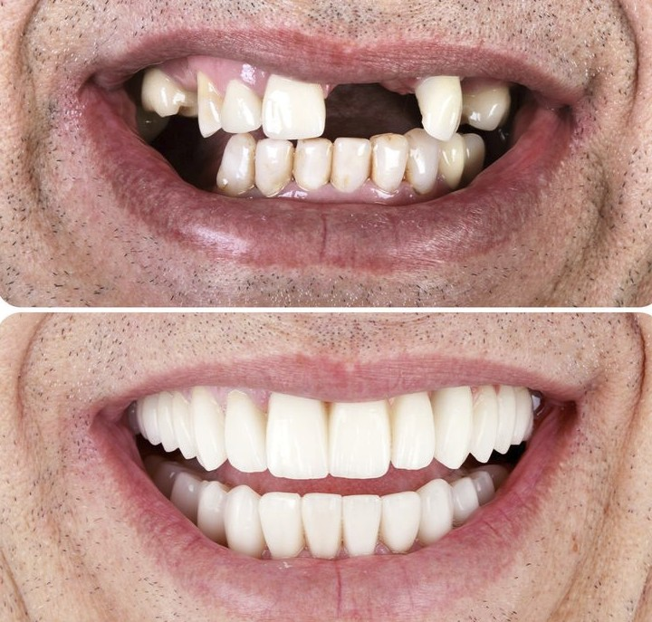
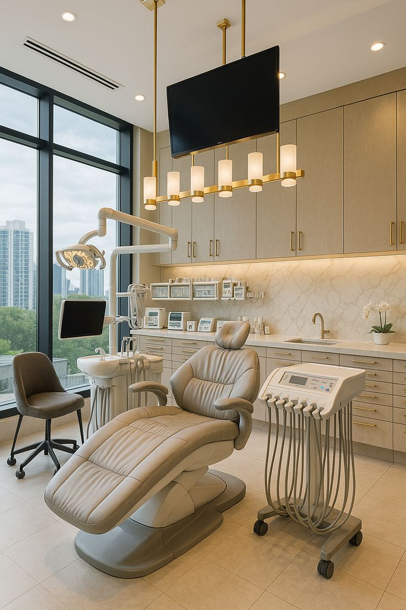
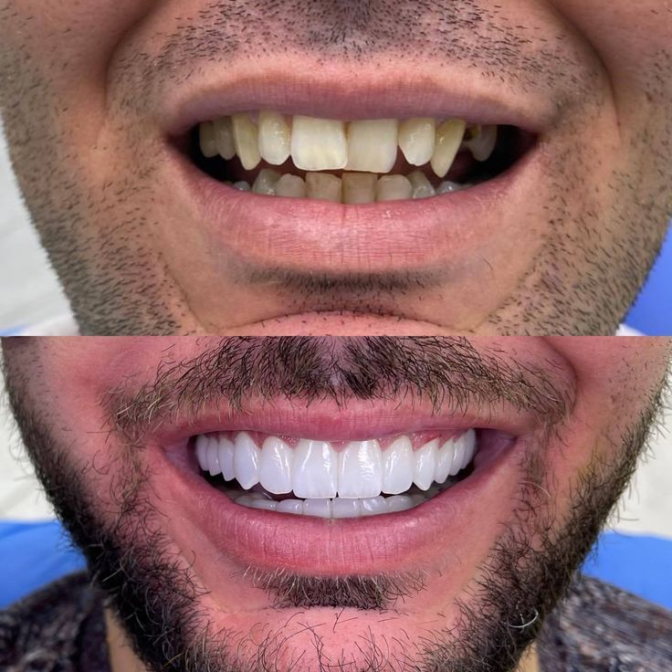
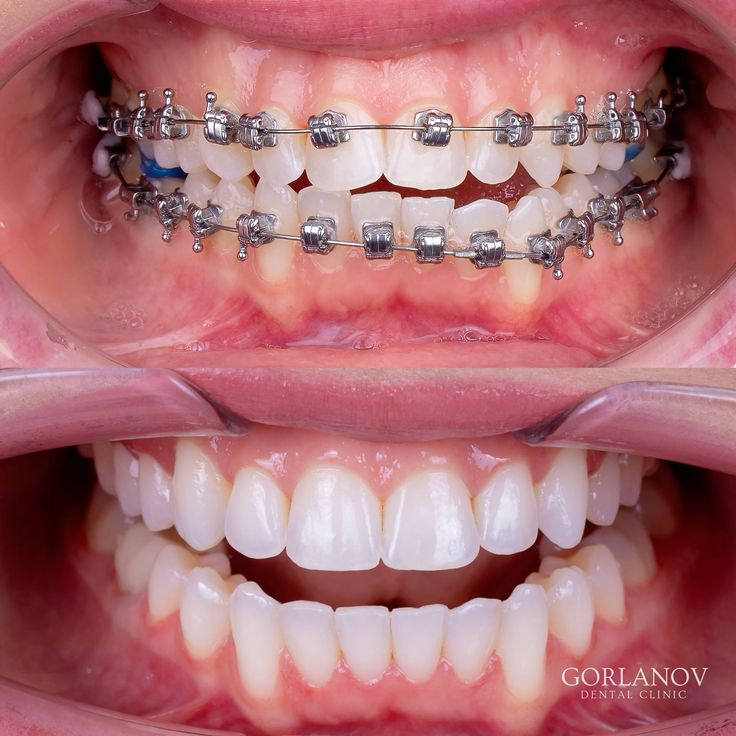
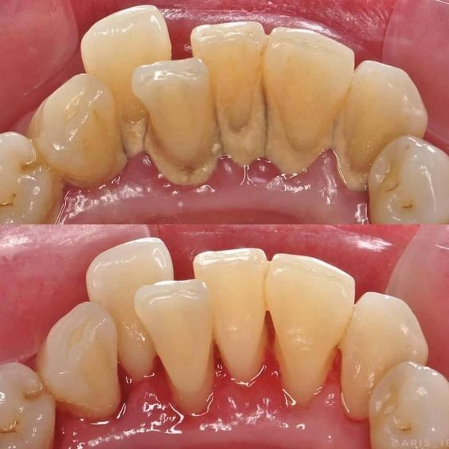
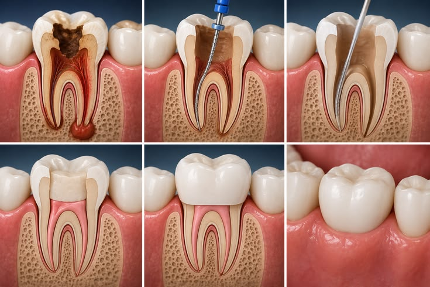

01 ReabilitaçãoImplantes Dentários
Recupere a função mastigatória e a estética do sorriso com implantes de alta precisão.
Planejamento 3D, cirurgia guiada e prótese provisória no mesmo dia.
Nossa clínica fica no Centro de Palhoça, com fácil acesso para quem vem do Aririú. Oferecemos implantes, estética, ortodontia, clínica geral e tratamentos especializados com a mesma qualidade e excelência.

"Atendimento excelente e perto de casa."
Estamos no Centro de Palhoça, a poucos minutos do Aririú. Chegar até nós é rápido e prático, com estacionamento disponível.
Uma hora dedicada a entender o seu histórico, medos e prioridades — sem pressa, com acolhimento.
Cada tratamento é conduzido por um especialista — não pelo mesmo profissional para tudo.
Oferecemos todos os tratamentos com planejamento digital 3D e especialistas dedicados.

01 ReabilitaçãoRecupere a função mastigatória e a estética do sorriso com implantes de alta precisão.
Planejamento 3D, cirurgia guiada e prótese provisória no mesmo dia.

02 SorrisoLentes, facetas e clareamento para transformar seu sorriso com naturalidade.
Planejamento facial, mock-up digital e resultado natural garantido.

03 AlinhamentoInvisalign e aparelho fixo para alinhar seus dentes com conforto e discrição.
Simulação 3D, escaneamento intraoral e primeiro alinhador em até 3 semanas.

04 PrevençãoPrevenção, limpeza, restaurações e manutenção da saúde bucal para toda a família.
Atendimento humanizado, diagnóstico precoce e orientação personalizada.

05 SalvamentoTratamento de canal com microscopia e tecnologia digital para salvar seus dentes.
Procedimento confortável, preciso e com recuperação rápida.
 06
Bem-estar
06
Bem-estar
Tratamento especializado para dores na face, cabeça e desgaste dental.
Diagnóstico preciso e abordagem multidisciplinar para alívio dos sintomas.
Estamos no Centro de Palhoça, com acesso rápido para quem vem do Aririú e estacionamento disponível.
Rua das Marés, 128 — Sala 4
Centro, Palhoça — SC
🚗 Do Aririú: Aproximadamente 10-15 minutos · Estacionamento disponível
🚌 Transporte público: Linhas que passam pelo Centro de Palhoça
"Atendimento excelente e perto de casa. Fiz meu implante e recomendo a todos do Aririú."
— Paciente do Aririú
"Vim do Aririú para fazer lentes de contato e saí com um sorriso que eu nem sabia que era possível."
— Paciente do Aririú
"A clínica fica no Centro, mas valeu muito a pena vir do Aririú. Atendimento humanizado e resultado incrível."
— Paciente do Aririú
Não. Nossa clínica fica no Centro de Palhoça, na Rua das Marés, 128. Atendemos pacientes de toda a região, incluindo o Aririú, com fácil acesso e estacionamento.
Do Aririú, você chega ao Centro de Palhoça em aproximadamente 10-15 minutos de carro. Temos estacionamento disponível para pacientes. Também há linhas de ônibus que passam pelo Centro.
Não trabalhamos com convênios odontológicos. Emitimos nota fiscal e recibo detalhado que a maioria dos planos de saúde de reembolso aceita.
A avaliação inicial (60 minutos, com exame clínico e conversa) custa R$ 280. Para pacientes de toda a região, esse valor entra como crédito na primeira etapa do tratamento.
Agende sua avaliação e descubra como a odontologia de excelência pode transformar seu sorriso — com fácil acesso para você.